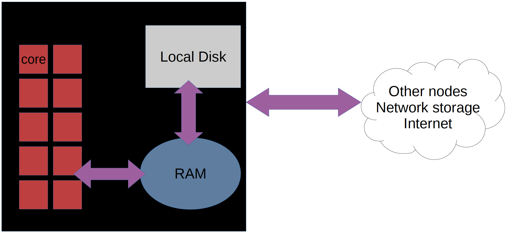
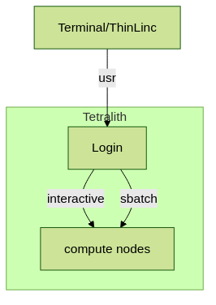

HPC clusters
The HPC centers UPPMAX, HPC2N, LUNARC, NSC and Dardel
Five HPC centers
There are many similarities:
Login vs. calculation/compute nodes
Environmental module system with software hidden until loaded with
module loadSlurm batch job and scheduling system
… and small differences:
commands to load R, Matlab and Julia and packages/libraries
sometimes different versions of R, Matlab and Julia, etc.
slightly different flags to Slurm
… and some bigger differences:
UPPMAX has three different clusters
Rackham for general purpose computing on CPUs only
Snowy available for local projects and suits long jobs (< 1 month) and has GPUs
Bianca for sensitive data and has GPUs
HPC2N has Kebnekaise with GPUs
LUNARC has Cosmos with GPUs (and Cosmos-SENS)
NSC has several clusters - BerzeLiUs (AI/ML, NAISS) - Tetralith (NAISS) - Sigma (LiU local) - Freja (R&D, located at SMHI) - Nebula (MET Norway R&D) - Stratus (weather forecasts, located at NSC) - Cirrus (weather forecasts, located at SMHI) - We will be using Tetralith, which also has GPUs
PDC has Dardel with AMD GPUs
Briefly about the cluster hardware and system at UPPMAX, HPC2N, LUNARC, NSC and PDC
What is a cluster?
Login nodes and calculations/computation nodes
A network of computers, each computer working as a node.
Each node contains several processor cores and RAM and a local disk called scratch.

The user logs in to login nodes via Internet through ssh or Thinlinc.
Here the file management and lighter data analysis can be performed.

The calculation nodes have to be used for intense computing.
Common features
Linux kernel
Bash shell
Intel CPUs, except for Dardel with AMD.
NVidia GPUs (HPC2N/LUNARC, also AMD) except for Dardel with AMD.
Technology |
Kebnekaise |
Rackham |
Snowy |
Bianca |
Cosmos |
Tetralith |
Dardel |
|---|---|---|---|---|---|---|---|
Cores/compute node |
28 (72 for largemem, 128/256 for AMD Zen3/Zen4) |
20 |
16 |
16 |
48 |
32 |
128 |
Memory/compute node |
128-3072 GB |
128-1024 GB |
128-4096 GB |
128-512 GB |
256-512 GB |
96-384 GB |
256-2048 GB |
GPU |
NVidia V100, A100, A6000, L40s, H100, A40, AMD MI100 |
None |
NVidia T4 |
NVidia A100 |
NVidia A100 |
NVidia T4 |
four AMD Instinct™ MI250X á 2 GCDs |
Overview of the UPPMAX systems
![graph TB
Node1 -- interactive --> SubGraph2Flow
Node1 -- sbatch --> SubGraph2Flow
subgraph "Snowy"
SubGraph2Flow(calculation nodes)
end
ThinLinc -- usr-sensXXX + 2FA + VPN ----> SubGraph1Flow
Terminal/ThinLinc -- usr --> Node1
Terminal -- usr-sensXXX + 2FA + VPN ----> SubGraph1Flow
Node1 -- usr-sensXXX + 2FA + no VPN ----> SubGraph1Flow
subgraph "Bianca"
SubGraph1Flow(Bianca login) -- usr+passwd --> private(private cluster)
private -- interactive --> calcB(calculation nodes)
private -- sbatch --> calcB
end
subgraph "Rackham"
Node1[Login] -- interactive --> Node2[calculation nodes]
Node1 -- sbatch --> Node2
end](../_images/mermaid-9b8712ee01100c69ff26b918b4d0cc4be4fc8db0.png)
Overview of the HPC2N system
Overview of the LUNARC system

Overview of the NSC systems
